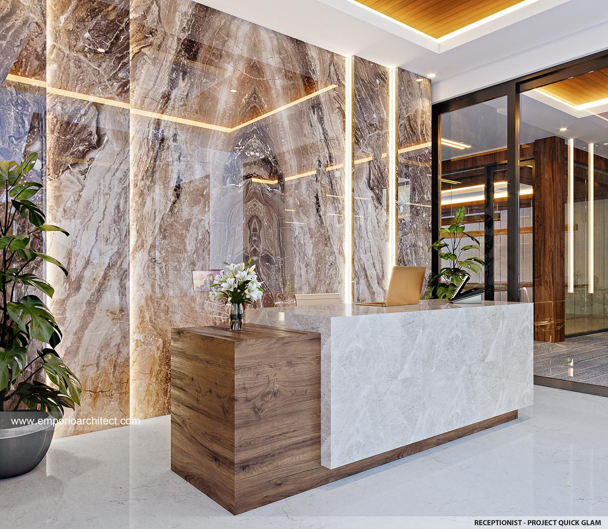
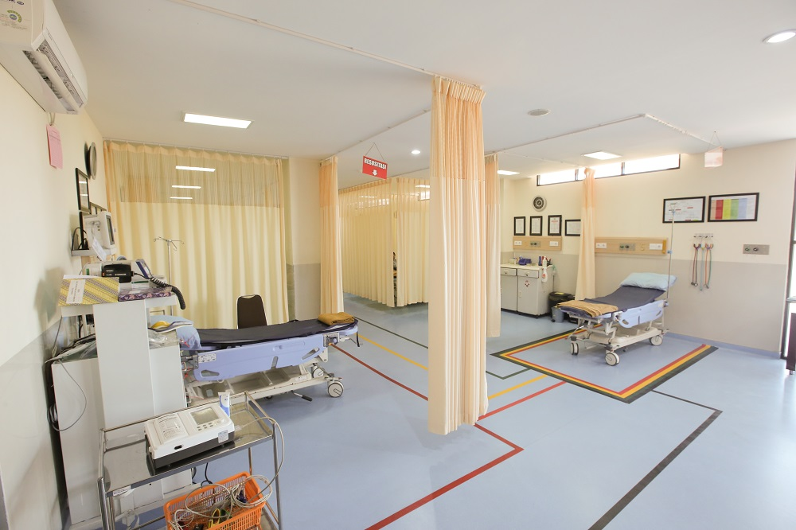
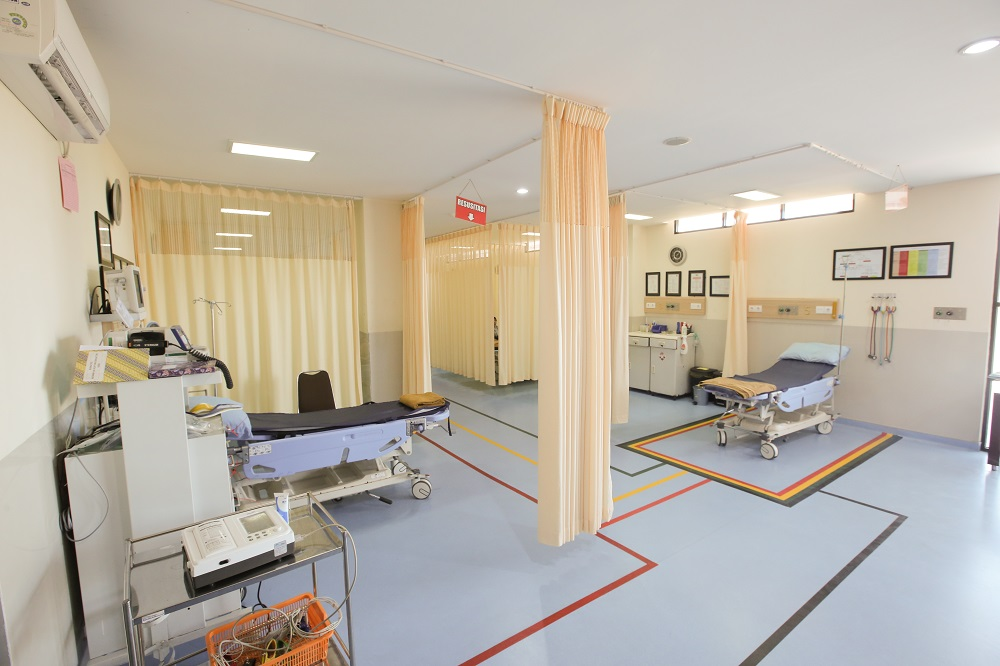
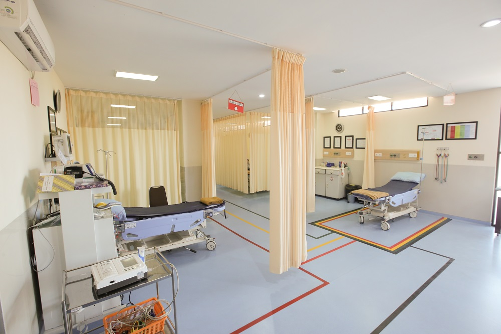

Galeri Fasilitas Kami
Berikut adalah beberapa fasilitas di Auraline Clinic. Kami berkomitmen menjaga kebersihan untuk kesehatan pasien.



 


Kebersihan dan kenyamanan adalah prioritas kami dalam memberikan pelayanan.